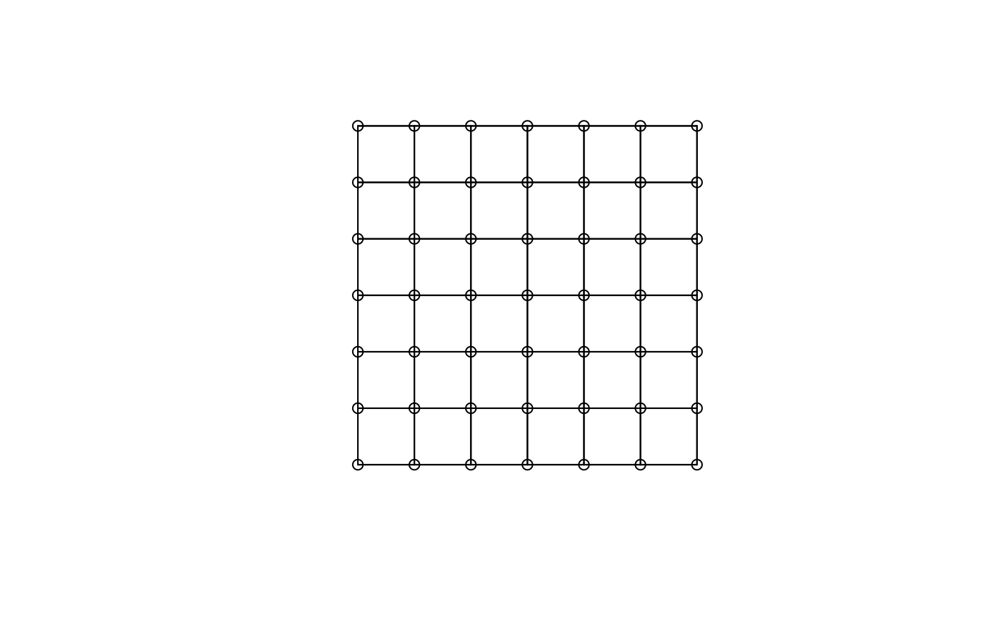

cell2nb.RdThe function generates a list of neighbours for a grid of cells. Helper functions are used to convert to and from the vector indices for row and column grid positions, and rook (shared edge) or queen (shared edge or vertex) neighbour definitions are applied by type. If torus is TRUE, the grid is mapped onto a torus, removing edge effects.
cell2nb(nrow, ncol, type="rook", torus=FALSE, legacy=FALSE) mrc2vi(rowcol, nrow, ncol) rookcell(rowcol, nrow, ncol, torus=FALSE, rmin=1, cmin=1) queencell(rowcol, nrow, ncol, torus=FALSE, rmin=1, cmin=1) vi2mrc(i, nrow, ncol)
| nrow | number of rows in the grid |
|---|---|
| ncol | number of columns in the grid |
| type | rook or queen |
| torus | map grid onto torus |
| legacy | default FALSE, nrow/ncol reversed, if TRUE wrong col/row directions (see https://github.com/r-spatial/spdep/issues/20) |
| rowcol | matrix with two columns of row, column indices |
| i | vector of vector indices corresponding to rowcol |
| rmin | lowest row index |
| cmin | lowset column index |
The function returns an object of class nb with a list of integer vectors containing neighbour region number ids. See card for details of “nb” objects.
#> Neighbour list object: #> Number of regions: 49 #> Number of nonzero links: 168 #> Percentage nonzero weights: 6.997085 #> Average number of links: 3.428571 #> Link number distribution: #> #> 2 3 4 #> 4 20 25 #> 4 least connected regions: #> 1:1 7:1 1:7 7:7 with 2 links #> 25 most connected regions: #> 2:2 3:2 4:2 5:2 6:2 2:3 3:3 4:3 5:3 6:3 2:4 3:4 4:4 5:4 6:4 2:5 3:5 4:5 5:5 6:5 2:6 3:6 4:6 5:6 6:6 with 4 linksxyc <- attr(nb7rt, "region.id") xy <- matrix(as.integer(unlist(strsplit(xyc, ":"))), ncol=2, byrow=TRUE) plot(nb7rt, xy)#> Neighbour list object: #> Number of regions: 49 #> Number of nonzero links: 196 #> Percentage nonzero weights: 8.163265 #> Average number of links: 4 #> Link number distribution: #> #> 4 #> 49 #> 49 least connected regions: #> 1:1 2:1 3:1 4:1 5:1 6:1 7:1 1:2 2:2 3:2 4:2 5:2 6:2 7:2 1:3 2:3 3:3 4:3 5:3 6:3 7:3 1:4 2:4 3:4 4:4 5:4 6:4 7:4 1:5 2:5 3:5 4:5 5:5 6:5 7:5 1:6 2:6 3:6 4:6 5:6 6:6 7:6 1:7 2:7 3:7 4:7 5:7 6:7 7:7 with 4 links #> 49 most connected regions: #> 1:1 2:1 3:1 4:1 5:1 6:1 7:1 1:2 2:2 3:2 4:2 5:2 6:2 7:2 1:3 2:3 3:3 4:3 5:3 6:3 7:3 1:4 2:4 3:4 4:4 5:4 6:4 7:4 1:5 2:5 3:5 4:5 5:5 6:5 7:5 1:6 2:6 3:6 4:6 5:6 6:6 7:6 1:7 2:7 3:7 4:7 5:7 6:7 7:7 with 4 links# https://github.com/r-spatial/spdep/issues/20 GT <- GridTopology(c(1, 1), c(1,1), c(10, 50)) SPix <- as(SpatialGrid(GT), "SpatialPixels") nb_rook_cont <- poly2nb(as(SPix, "SpatialPolygons"), queen=FALSE) nb_rook_dist <- dnearneigh(coordinates(SPix), 0, 1.01) all.equal(nb_rook_cont, nb_rook_dist, check.attributes=FALSE)#> [1] TRUE## [1] TRUE t.nb <- cell2nb(nrow=50, ncol=10, type='rook', legacy=TRUE) isTRUE(all.equal(nb_rook_cont, t.nb, check.attributes=FALSE))#> [1] FALSE## [1] FALSE t.nb <- cell2nb(nrow=50, ncol=10, type='rook') isTRUE(all.equal(nb_rook_cont, t.nb, check.attributes=FALSE))#> [1] TRUE## [1] TRUE